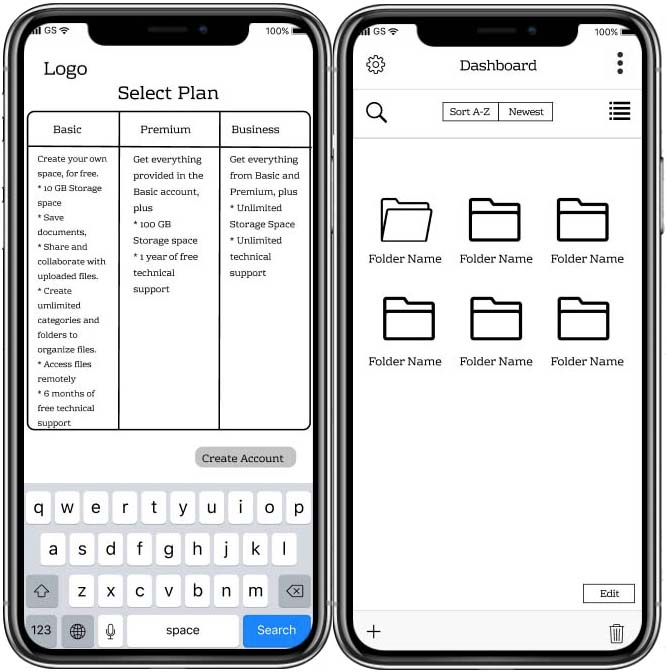
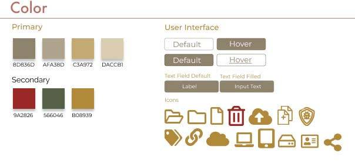
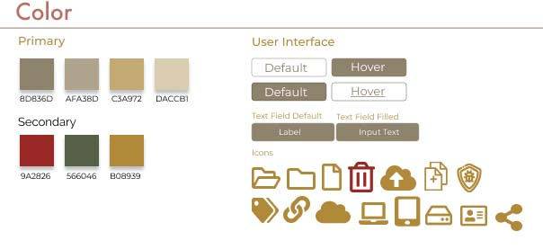
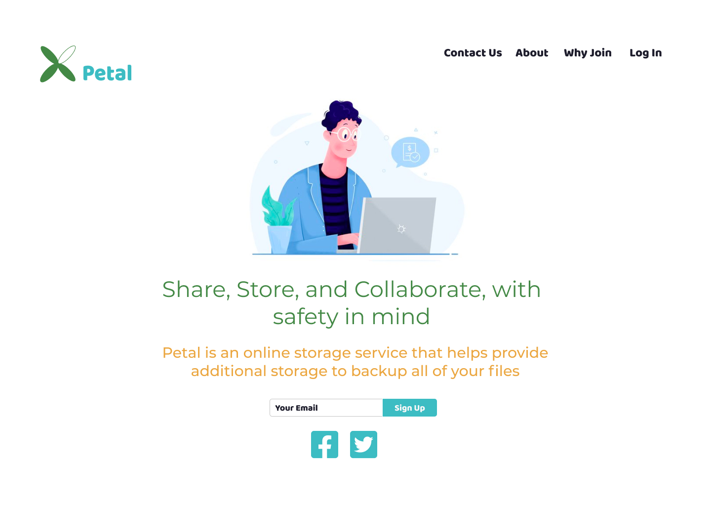
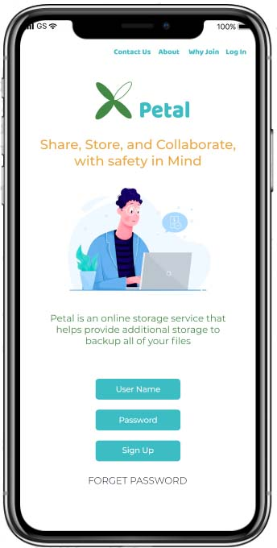

Fellow stakeholders and investors are interested in creating a cloud storage platform that differs from other competitors in the market.
With this idea in mind, certain questions arose like:
My solution to this brief is Petal, a cloud organizational web and mobile platform focused on user friendliness, organization, and accessibility from different devices. This platform aims to aid its users by providing access through multiple devices. Petal also stores user files and allows them to stay organized, as well as share and save links with other users.
To fully understand the current cloud storage market and how people utilize these platforms, I created a user survey catered toward the client briefing. I sent this survey to the general public to gain some insight into a new cloud service that could potentially fill in the missing pieces. From the survey results I noticed a few key takeaways:
I performed a competitive analysis of a diverse range of cloud storage platforms that each brought something different to the cloud storage market. I analyzed Dropbox and Google Drive because they are the market leaders in this industry and the most recognizable in my survey. I also analyzed Pinterest for its different approach of social media sharing to cloud storage

With these competitors in mind, a new potential platform can provide a service with better security for the user so their files do not get hacked, for example: if a user uploads a file into the cloud, the platform can provide an internal virus scanner that scans any uploaded file. Additionally, this new platform would provide better updates that will eliminate system crashes and provide weekly backup options to users to they can stay on top of backing up their files.
Full SWOTI interviewed two people in person from my survey to talk in depth about their experiences with cloud storage platforms. From these interviews, I realized that even though their backgrounds were different, they both shared the same frustrations of high monthly plans and lack of security.


Next, I started sketching out possible flows to accomplish the goal of my user stories from the target audience perspective. I observed the ways Dropbox, Google Drive, and Pinterest mapped their common flows like signing in, onboarding and upgrading. I created my user flows based on what seemed most straightforward and user friendly.


This first round of usability tests I had performed, highlighted some design inconsistencies of my primary layouts and issues with upgrading the users storage plan. For my web landing page, I had a user state that my grey input boxes looked similar to the call to action buttons. As well as displaying two trash can icons proved to be confusing for another user. With my web dashboard page, I had a user state that the folder icons looked like they were all open and were hard to interpret.

Then in regards to my mobile application, I had the same feedback in terms of my folder icons being hard to interpret. I had another user also state that my upgrade/pricing table did not have a way to establish which plan to select and suggested that I add some sort of radio button or call to action button.
See Full Wireframes Overall, the feedback revealed the functionality was there, but it just consisted of a bit more work on the design aspect.


When sketching out the logo I had initially wanted to give it a cloud name like Cirrus or Cumulus, but then realized that this idea was already done and very predictable. My second idea was going with a name like “Vault” because the user can associate vault with keeping their belongings safe and secure, but I felt that this idea was not what I wanted to convey to my user. Lastly, I leaned toward Petal. I gravitated towards the idea of Petal, because of the symbolism that it provides. When someone picks a petal from a flower, they are able to carry that with them wherever they go like in a book or diary. I liked that idea with a cloud service as well, when someone wants to access a file while they are on the go, they have the ability to do so on their phone, or tablet, or ipad. Additionally, I loved the idea of what a flower/petal represents. The idea of growth whether it be in a company or to a person individually. I want this tool to help the user achieve that growth no matter what shape or form.
 

For my overall style guide, I had initially went for a more earth tone to match the plant theme of my brand. I mainly wanted to stray away from what was commonly used with the current competition and stand out. Regarding the primary font set used in my style guide, I wanted to use clean fonts to contrast with my earthy color scheme. I ended up playing around with the logo color scheme to see which would end up being the best fit.

With my dashboard prototype I had replaced the folder icons so it was more distinguishable for the user, and removed the second trash icon.
View PrototypeFor my mobile prototype, I had applied the same changes as I did with my web application, but had also ended up playing around with the coloring to see which way turned out most effective to the user.
View Prototype
Unfortunately, each color scheme variation still made it very hard for the user to see font and icons. As previously stated, my feedback highlighted my font set looked familiar to one another and my color scheme would make it hard for the user to see icons and buttons.
 After further iterations and doing further research, I implemented a new trendier color scheme that was not only more fun but also more appearing and inviting to the user. I thought this color scheme would be a little more calming and engaging as well. I also provided a new font set that consists of Baloo and Montserrat, these fit perfectly with the overall color scheme and layout of the web and mobile application. Additionally with my landing page, I have added an image to the left, moved the center log in to the right side of the page, added a facebook and twitter icon to the bottom of my navigation page, and finally improved the logo color scheme.

The same will apply to my mobile application as well. I have improved the landing page by adding an image there and improving the color scheme and font.

Watching Petal blossom from idea to prototype was a comprehensive process that provided many lessons for future iterations and projects. A few of these lessons were:
With that being said, I would like to thank you for taking the time to view my case study and hope you have a wonderful day.